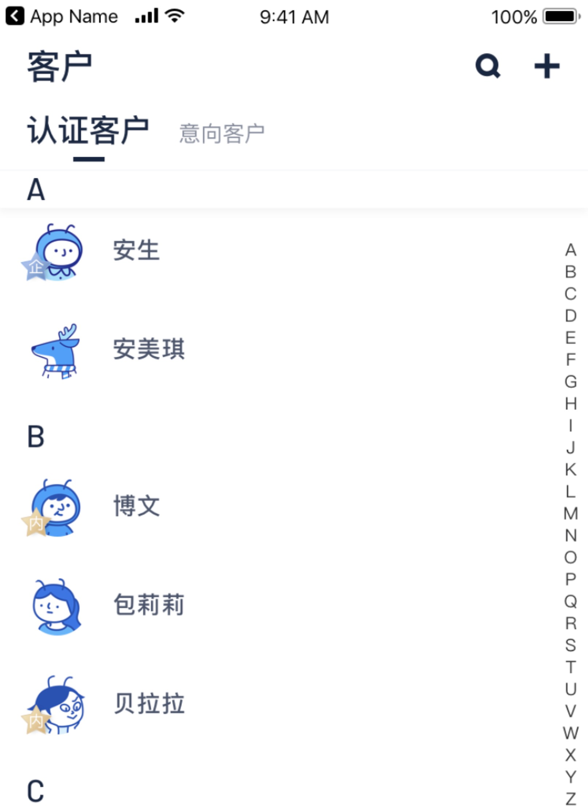

起因是项目有这样一个设计，如图所示：

在悬浮在最上面的SectionHeaderView有一个阴影的特殊处理，而其他其他没有悬浮的SectionHeaderView则是没有阴影处理的，于是开始探索之旅。
不妥方法一
最开始的想法是在TableView内部镶嵌一个自定义View制作一个阴影的图，通过监听ContentOffset，来创建一个悬浮的阴影。
因为层级关系，SectionHeaderView会自动在最顶部，还需要通过代码切换层级。
虽然可以完成初级效果。但是在表头切换的时候，它会永远的存在，会导致表头从阴影里穿过的诡异效果。
–> 放弃！
不妥方法二
查了一下，发现了这种做法：监听滑动时间，通过计算visibleCells里面最小的cell，来获取他所属cellSection，再进行调整。核心代码如下：
1
2
3
4
5
6
7
8
9
10
11
12
13
14
15
16
17
18
19
20
21
| - (void)scrollViewDidScroll:(UIScrollView *)scrollView{
if (scrollView == self.tableView) {
NSArray <UITableViewCell *> *cellArray = [self.tableView visibleCells];
//cell的section的最小值
long cellSectionMINCount = LONG_MAX;
for (int i = 0; i < cellArray.count; i++) {
UITableViewCell *cell = cellArray[i];
long cellSection = [self.tableView indexPathForCell:cell].section;
if (cellSection < cellSectionMINCount) {
cellSectionMINCount = cellSection;
}
}
_currentTopSectionViewCount = cellSectionMINCount;
NSLog(@"当前悬停的组头是:%ld",_currentTopSectionViewCount);
}
}
---------------------
作者：MeteoriteMan
来源：CSDN
原文：https://blog.csdn.net/qq_18683985/article/details/80082282
版权声明：本文为博主原创文章，转载请附上博文链接！
|
再不考虑系统能力的情况下，个人感觉这个运算级是比较大的。首先在互动的每次回调去拿visibleCells进行一次遍历查询，然后拿到最小值。
–> 还行！
不同方法三
也是监听滑动事件，同时需要去关心：当前组头，是上拉还是下滑，是否是第一次加载，滚动的偏移量。
https://www.cnblogs.com/piaojin/p/5945095.html
(void)tableView:(UITableView *)tableView willDisplayHeaderView:(UIView *)view forSection:(NSInteger)section组头将要出现的时候系统会调用；(void)tableView:(UITableView *)tableView didEndDisplayingHeaderView:(UIView *)view forSection:(NSInteger)section 组头出现的时候系统会调用；
利用以上两个方法可以判断出组头被顶出和组头又下拉回来事件，还有其他的组头相关动作可以监听需自己去编写。
_currentSection：当前显示的组头
_isUpScroll：是否是上拉滚动
_isFirstLoad：是否第一次加载tableView
_oldY:滚动的偏移量
代码如下：
1
2
3
4
5
6
7
8
9
10
11
12
13
14
15
16
17
18
19
20
21
22
23
24
25
26
27
28
29
30
31
32
33
34
35
36
37
| - (void)tableView:(UITableView *)tableView willDisplayHeaderView:(UIView *)view forSection:(NSInteger)section{
if(!_isUpScroll && (_currentSection - section) == 1){
//最上面组头（不一定是第一个组头，指最近刚被顶出去的组头）又被拉回来
_currentSection = section;
NSLog(@"willDisplayHeaderView显示第%ld组",(long)section);
}
}
- (void)tableView:(UITableView *)tableView didEndDisplayingHeaderView:(UIView *)view forSection:(NSInteger)section{
if(!_isFirstLoad && _isUpScroll){
_currentSection = section + 1;
//最上面的组头被顶出去
NSLog(@"didEndDisplayingHeaderView显示第%ld组",(long)section + 1);
}
}
- (void)scrollViewDidScroll:(UIScrollView *)scrollView{
if ([scrollView isEqual: self.tableView]) {
if (self.tableView.contentOffset.y > _oldY) {
// 上滑
_isUpScroll = YES;
NSLog(@"上滑");
}
else{
// 下滑
_isUpScroll = NO;
NSLog(@"下滑");
}
_isFirstLoad = NO;
}
}
- (void)scrollViewWillBeginDragging:(UIScrollView *)scrollView{
// 获取开始拖拽时tableview偏移量
_oldY = self.tableView.contentOffset.y;
}
|
个人感觉：1.需要关注的点过多，比如是上划还是下滑。2.代码相对比较分散
–> 较优！
推荐做法：
灵感启发来源于做法二，他是通过visibleCells，那我为什么不可以自己维护一个visibleSectionHeaders，通过(void)tableView:(UITableView *)tableView willDisplayHeaderView:(UIView *)view forSection:(NSInteger)section来添加，(void)tableView:(UITableView *)tableView didEndDisplayingHeaderView:(UIView *)view forSection:(NSInteger)section来减少。
然后KVO数组的改变，来遍历visibleCells寻找最少顶部的SectionHeaderView。
1.定义字典key，创建visibleSectionHeaders字典。
1
2
3
4
5
6
7
8
9
| typedef NSString * BMVisibleSectionDictionaryKey NS_EXTENSIBLE_STRING_ENUM;
BMVisibleSectionDictionaryKey kVisibleSectionDictionarySectionKey = @"kVisibleSectionDictionarySectionKey";
BMVisibleSectionDictionaryKey kVisibleSectionDictionaryViewKey = @"kVisibleSectionDictionaryViewKey";
@interface GCContactCertifiedPersonTableView ()<UITableViewDelegate, UITableViewDataSource>
@property (nonatomic, copy) NSArray <NSDictionary *> *visibleSectionHeaders;
@end
|
2.通过SectionHeaderView的显示与不显示维护数组
1
2
3
4
5
6
7
8
9
10
11
12
13
14
15
16
17
| - (void)tableView:(UITableView *)tableView willDisplayHeaderView:(UIView *)view forSection:(NSInteger)section
{
NSMutableArray *tempArray = [self.visibleSectionHeaders mutableCopy];
[tempArray addObject:@{kVisibleSectionDictionarySectionKey:@(section),
kVisibleSectionDictionaryViewKey:view,
}];
self.visibleSectionHeaders = [NSArray arrayWithArray:tempArray];
}
- (void)tableView:(UITableView *)tableView didEndDisplayingHeaderView:(nonnull UIView *)view forSection:(NSInteger)section
{
NSMutableArray *tempArray = [self.visibleSectionHeaders mutableCopy];
[tempArray removeObject:@{kVisibleSectionDictionarySectionKey:@(section),
kVisibleSectionDictionaryViewKey:view,
}];
self.visibleSectionHeaders = [NSArray arrayWithArray:tempArray];
}
|
这个有一个小问题，因为后面采用的KVO，但是NSMutableArray并不支持数组内部成员变化的监听。所以这里替换成NSArray。
3.KVOvisibleSectionHeaders数组。做自己的自定义操作。
1
2
3
4
5
6
7
8
9
10
11
12
13
14
15
16
17
18
19
20
21
| @weakify(self)
[RACObserve(self, visibleSectionHeaders) subscribeNext:^(id _Nullable x) {
@strongify(self)
// 寻找最顶部
NSArray <NSDictionary *> *visibleSectionHeaders = x;
// 需要最小section
NSInteger minSectionIndex = NSIntegerMax;
NSDictionary *minSectionDic = @{};
for (NSDictionary *visibleSectionHeaderDic in visibleSectionHeaders) {
if ([visibleSectionHeaderDic[kVisibleSectionDictionarySectionKey] integerValue] < minSectionIndex) {
minSectionDic = visibleSectionHeaderDic;
minSectionIndex = [visibleSectionHeaderDic[kVisibleSectionDictionarySectionKey] integerValue];
}
// 复原下面操作
UITableViewHeaderFooterView *otherSectionView = visibleSectionHeaderDic[kVisibleSectionDictionaryViewKey];
otherSectionView.textLabel.text = self.keys[[visibleSectionHeaderDic[kVisibleSectionDictionarySectionKey] integerValue]];
}
// 获取view 执行操作
UITableViewHeaderFooterView *minSectionView = minSectionDic[kVisibleSectionDictionaryViewKey];
minSectionView.textLabel.text = @"z";
}];
|
这里因为demo原因，做的操作是是最顶上的为字母z，其他复原为正常。
这样做相对方法二来说，计算级少了很多，我只关心visibleSectionHeaders的变化，理因只在visibleSectionHeaders寻找最小。相对于方法三来说，代码更加聚合。没有引入其他多余的变量，没有其他多余的事件需要关系。